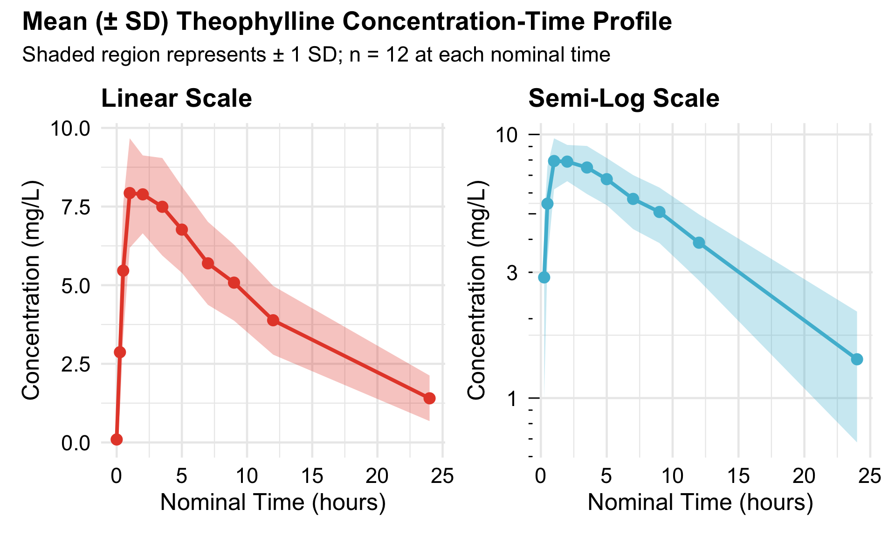
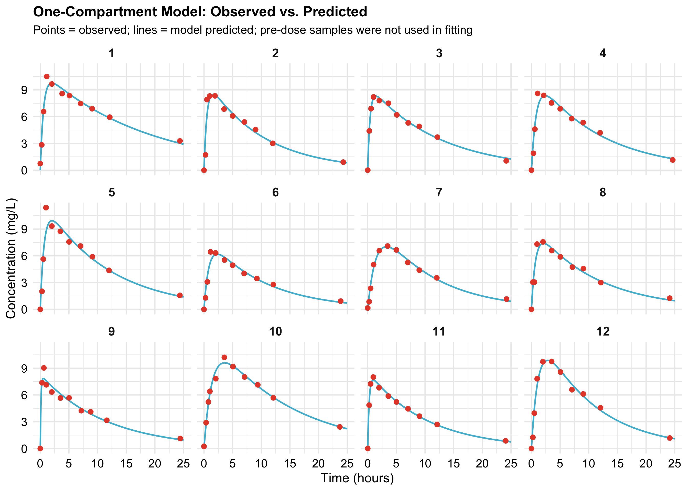
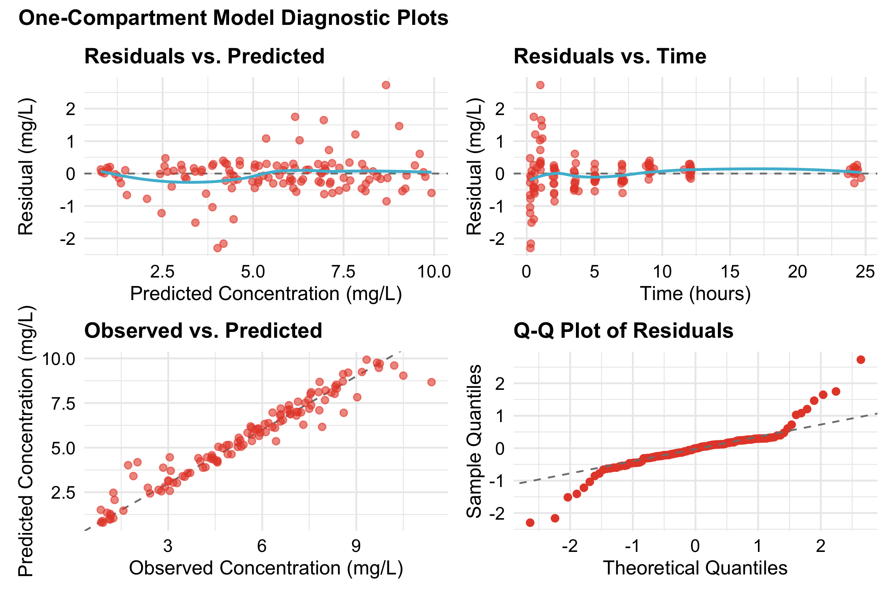
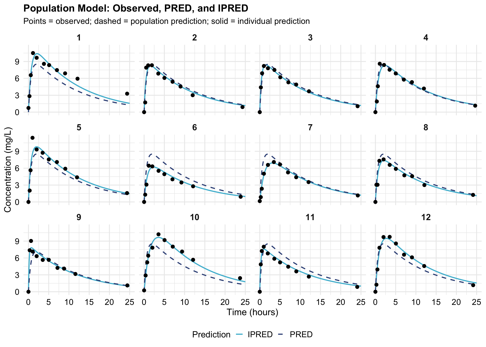
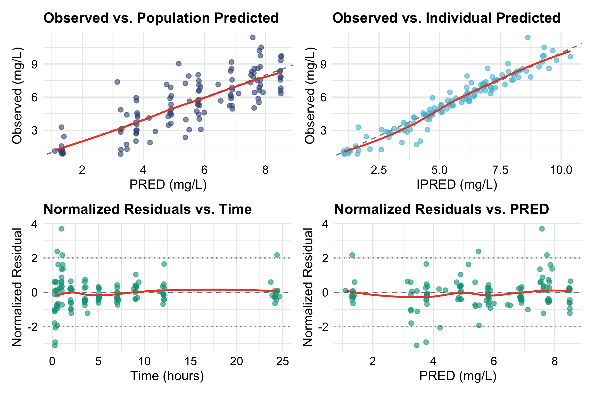

Non-Compartmental, Individual Compartmental, and Population Modeling Approaches
Author
Prince Agyapong
Published
November 26, 2026
Introduction
Background on Pharmacokinetics
Pharmacokinetics (PK) is the quantitative study of drug absorption, distribution, metabolism, and elimination (ADME). The concentration-time profile following administration summarizes these processes and is the basis for choosing doses that reach therapeutic concentrations while limiting toxicity.
Theophylline is a methylxanthine bronchodilator used in asthma and chronic obstructive pulmonary disease (COPD). It has a narrow therapeutic index. The traditional target range is 10 to 20 mg/L, and many current references use 5 to 15 mg/L. Concentrations below the range may be ineffective, and concentrations above it can cause seizures, cardiac arrhythmias, and death, so accurate PK characterization matters clinically.
Analytical Approaches in Pharmacokinetics
Non-Compartmental Analysis (NCA)
Non-compartmental analysis makes minimal assumptions about the underlying physiology and relies on the shape of the observed concentration-time curve. NCA gives estimates of area under the curve (AUC), maximum concentration (Cmax), clearance, and half-life using numerical integration and log-linear regression of the terminal phase.
Advantages of NCA:
No assumptions about compartmental structure
Simple calculations
Standard for regulatory bioavailability and bioequivalence assessments
Not affected by structural model misspecification
Limitations of NCA:
Cannot predict concentrations at unobserved times or under other dosing regimens
Limited mechanistic insight
Cannot separate distribution from elimination processes
Compartmental Analysis
Compartmental models describe the body as one or more interconnected compartments with first-order transfer between them. They allow prediction of concentrations under other dosing scenarios.
One-Compartment Model: The drug distributes instantaneously and uniformly into a single compartment. This is appropriate when distribution is fast relative to elimination.
Two-Compartment Model: The drug enters a central compartment (blood and highly perfused tissues) and equilibrates more slowly with a peripheral compartment. This produces a biphasic decline: a faster distribution phase followed by a slower terminal phase.
Population (Mixed-Effects) Modeling
Fitting each subject separately and then summarizing the estimates (the two-stage approach) ignores the uncertainty in each subject’s estimates and tends to overstate between-subject variability. Nonlinear mixed-effects models fit all subjects together, estimating typical (population) parameters, between-subject variability (BSV), and residual error at the same time.
Study Objectives
This analysis aims to:
Perform non-compartmental analysis of theophylline PK data, with all NCA parameters calculated from first principles
Fit one-compartment models to each subject to characterize absorption and elimination
Fit two-compartment models to each subject to evaluate whether a distribution phase can be identified
Compare the structural models using convergence, information criteria, and diagnostic plots
Fit a population PK model with nonlinear mixed effects to estimate typical parameters and between-subject variability
Interpret the results in the context of theophylline clinical pharmacology
Methods
Study Data
The analysis uses the Theoph dataset included in R, which contains concentration-time data from 12 subjects who each received a single oral dose of theophylline. Each subject provided 11 blood samples over approximately 24 hours. Sampling times in the dataset are actual times and differ slightly between subjects; for summaries by time point, each sample was assigned its nominal time (0, 0.25, 0.5, 1, 2, 3.5, 5, 7, 9, 12, and 24 hours).
Show Code
nominal_times <-c(0, 0.25, 0.5, 1, 2, 3.5, 5, 7, 9, 12, 24)pk_data <- Theoph |>as_tibble() |>rename(ID = Subject, TIME = Time, CONC = conc, DOSE = Dose, WT = Wt) |>mutate(ID =factor(as.character(ID), levels =as.character(1:12)),DOSE_mg = DOSE * WT ) |>arrange(ID, TIME) |>group_by(ID) |>mutate(NTIME = nominal_times[row_number()]) |>ungroup()# Observations after dosing; the pre-dose sample is excluded from model fittingfit_data <- pk_data |>filter(TIME >0)n_subjects <-n_distinct(pk_data$ID)predose <- pk_data |>filter(TIME ==0, CONC >0)
Non-Compartmental Analysis Methods
Area Under the Curve (AUC)
AUC0-t was calculated with the linear-up/log-down trapezoidal method. Segments where concentration increased or stayed the same used the linear trapezoidal rule:
λz was estimated by log-linear regression of the terminal phase:
\[\ln(C) = \ln(C_0) - \lambda_z \times t\]
The terminal phase was selected automatically. Regressions were fitted to the last 3, 4, 5, and so on, points after Cmax (Cmax itself excluded). The regression with the highest adjusted R² was selected; when several regressions had an adjusted R² within 0.0001 of the highest value, the one using the most points was chosen. The slope with its sign reversed gives λz.
where Clast is the last measurable concentration. The percentage of AUC0-∞ obtained by extrapolation (AUC%extrap) was calculated for each subject, and AUC0-∞ was flagged as unreliable when AUC%extrap exceeded 20%.
Apparent Oral Clearance (CL/F)
\[CL/F = \frac{Dose}{AUC_{0-\infty}}\]
where F is the unknown oral bioavailability.
Apparent Terminal Volume of Distribution (Vz/F)
\[V_z/F = \frac{CL/F}{\lambda_z}\]
Mean Residence Time (MRT)
\[MRT = \frac{AUMC_{0-\infty}}{AUC_{0-\infty}}\]
where AUMC is the area under the first moment curve (concentration × time versus time). AUMC0-t used the same linear-up/log-down rule as AUC. For decreasing segments:
and the extrapolated portion is \(t_{last} C_{last}/\lambda_z + C_{last}/\lambda_z^2\). Because dosing was oral, MRT includes the mean absorption time.
Pre-Dose Concentrations
Three subjects had measurable concentrations in the pre-dose sample (Pre-Dose Concentrations). These were kept as observed values in NCA, so AUC0-t includes the area from the pre-dose concentration. The compartmental models predict a concentration of zero at time zero, so pre-dose samples were excluded from all model fitting.
Summary Statistics
Cmax, AUC, CL/F, and Vz/F are summarized with geometric means and geometric coefficients of variation (CV%), as these parameters are typically log-normally distributed. Arithmetic mean, SD, and CV% are also shown. Tmax is summarized with the median and range only.
Individual Compartmental Models
One-Compartment Model Structure
For oral administration with first-order absorption into a single compartment:
The model is symmetric in Ka and Ke (the “flip-flop” problem), so it was parameterized as Ka = Ke + exp(θ) to restrict estimates to the solution with Ka > Ke.
Two-Compartment Model Structure
Ka K12
Depot -------> Central <--------> Peripheral
| K21
| K10
v
Elimination
Both models were fitted to each subject by nonlinear least squares (nls(), Gauss-Newton). All parameters were estimated on the log scale to keep them positive. Each fit was started from several sets of initial values (3 for the one-compartment model and 36 for the two-compartment model), and the converged fit with the lowest residual sum of squares was kept. A fit was counted as converged only when nls() reported convergence (convInfo$isConv); fits ending in false or singular convergence were treated as failures.
An unweighted (additive) residual error model was used. This choice was checked in the population analysis, where power and combined additive-proportional variance models were compared against the additive model (Model Development).
Model Comparison Criteria
Models were compared using:
Convergence of each model for each subject
Akaike Information Criterion:\(AIC = -2\ln L + 2k\), where L is the maximized Gaussian likelihood and k counts the structural parameters plus the residual variance (as returned by AIC())
Bayesian Information Criterion:\(BIC = -2\ln L + k \ln(n)\)
Root Mean Square Error:\(RMSE = \sqrt{\frac{\sum(C_{obs} - C_{pred})^2}{n}}\)
Coefficient of determination (R²), reported descriptively
Visual inspection of fitted curves and residual plots
A ΔAIC (two-compartment minus one-compartment) below -2 was taken to favor the two-compartment model, and above 2 to favor the one-compartment model.
Population PK Model
A one-compartment population model with first-order absorption and elimination was fitted to all subjects with nlme(), using the self-starting SSfol() model parameterized as log(Ke), log(Ka), and log(CL/F). Individual parameters were modeled as log-normally distributed around the typical values, with a diagonal covariance matrix for the random effects. Estimation used maximum likelihood.
Candidate models differed in which parameters had random effects and in the residual error model (additive, power, and combined additive-proportional). Among models within 2 AIC units of the lowest AIC, the one with the fewest parameters was selected. BSV is reported as CV% = \(100\sqrt{e^{\omega^2} - 1}\), where ω is the standard deviation of the random effect.
Software
All analyses were performed using R version 4.5.2 (2025-10-31) with tidyverse for data manipulation and plotting, nlme for population modeling, gt for tables, and patchwork for figure layout.
Results
Exploratory Data Analysis
Dataset Overview
Show Code
demo_summary <- pk_data |>group_by(ID) |>summarise(Weight =first(WT),Dose_mg_kg =first(DOSE),Dose_mg =first(DOSE_mg),n_samples =n(),.groups ="drop" )demo_summary |>summarise(`N Subjects`=as.character(n()),`Weight (kg), Mean (SD)`=sprintf("%.1f (%.1f)", mean(Weight), sd(Weight)),`Weight (kg), Range`=sprintf("%.1f to %.1f", min(Weight), max(Weight)),`Dose (mg/kg), Mean (SD)`=sprintf("%.2f (%.2f)", mean(Dose_mg_kg), sd(Dose_mg_kg)),`Total Dose (mg), Mean (SD)`=sprintf("%.1f (%.1f)", mean(Dose_mg), sd(Dose_mg)),`Samples per Subject`=sprintf("%.0f", mean(n_samples)) ) |>pivot_longer(everything(), names_to ="Parameter", values_to ="Value") |>gt() |>tab_header(title ="Table 1. Study Population and Dosing Summary",subtitle ="Theophylline Pharmacokinetic Study" ) |>cols_align(align ="left")
Table 1. Study Population and Dosing Summary
Theophylline Pharmacokinetic Study
Parameter
Value
N Subjects
12
Weight (kg), Mean (SD)
69.6 (9.5)
Weight (kg), Range
54.6 to 86.4
Dose (mg/kg), Mean (SD)
4.63 (0.75)
Total Dose (mg), Mean (SD)
315.4 (15.0)
Samples per Subject
11
The study included 12 subjects who received oral theophylline at weight-based doses (mean 4.63 mg/kg). Body weights ranged from 54.6 to 86.4 kg, giving absolute doses of 267.8 to 320.6 mg. Each subject provided 11 samples.
Pre-Dose Concentrations
Subjects 1, 7 and 10 had measurable pre-dose concentrations (0.74, 0.15 and 0.24 mg/L, respectively). This may reflect residual drug from earlier exposure or assay background; the dataset does not allow the two to be distinguished. Their handling is described in Pre-Dose Concentrations (Methods).
Figure 1 shows the individual profiles on a linear scale. Concentrations rise over the first few hours, with individual peaks of 6.4 to 11.4 mg/L reached between 0.63 and 3.55 hours post-dose. Concentrations then decline through 24 hours.
Show Code
ggplot(fit_data, aes(x = TIME, y = CONC, color = ID)) +geom_line(linewidth =1.1) +geom_point(size =2.8) +scale_y_log10(breaks =c(1, 2, 5, 10), labels =c("1", "2", "5", "10")) +scale_color_manual(values = pk_colors) +labs(x ="Time (hours)",y ="Theophylline Concentration (mg/L)",color ="Subject",title ="Semi-Logarithmic Concentration-Time Profiles",subtitle ="Post-dose samples; pre-dose zeros cannot be shown on a log scale" ) +theme(legend.position ="right") +annotation_logticks(sides ="l")
On the semi-log scale (Figure 2), first-order elimination appears as a straight line. The terminal phases are approximately linear and roughly parallel across subjects. Visual inspection does not show a clear biphasic decline after the peak, although an early distribution phase could be hidden by ongoing absorption. The model comparison in Model Comparison tests this formally.
Mean Concentration Profile
Show Code
mean_profile <- pk_data |>group_by(NTIME) |>summarise(mean_conc =mean(CONC),sd_conc =sd(CONC),n =n(),.groups ="drop" ) |>mutate(cv =100* sd_conc / mean_conc)p1 <-ggplot(mean_profile, aes(x = NTIME, y = mean_conc)) +geom_ribbon(aes(ymin =pmax(0, mean_conc - sd_conc), ymax = mean_conc + sd_conc),alpha =0.3, fill = pk_colors[1]) +geom_line(linewidth =1.4, color = pk_colors[1]) +geom_point(size =3.5, color = pk_colors[1]) +labs(x ="Nominal Time (hours)", y ="Concentration (mg/L)", title ="Linear Scale")p2 <-ggplot(filter(mean_profile, NTIME >0), aes(x = NTIME, y = mean_conc)) +geom_ribbon(aes(ymin =pmax(0.1, mean_conc - sd_conc), ymax = mean_conc + sd_conc),alpha =0.3, fill = pk_colors[2]) +geom_line(linewidth =1.4, color = pk_colors[2]) +geom_point(size =3.5, color = pk_colors[2]) +scale_y_log10() +labs(x ="Nominal Time (hours)", y ="Concentration (mg/L)", title ="Semi-Log Scale") +annotation_logticks(sides ="l")p1 + p2 +plot_annotation(title ="Mean (± SD) Theophylline Concentration-Time Profile",subtitle ="Shaded region represents ± 1 SD; n = 12 at each nominal time" )

Figure 3: Figure 3. Mean (± SD) Concentration-Time Profile by Nominal Time
The mean concentration peaked at 7.9 mg/L at the 1-hour nominal time point (Figure 3). The CV of concentrations across subjects was 39% to 65% before 1 hour, reflecting differences in absorption, and 16% to 52% from 1 to 24 hours.
Cmax = maximum concentration; Tmax = time of Cmax; AUC = area under the curve; AUC%extrap = percentage of AUC0-∞ extrapolated; λz = terminal elimination rate constant; nλz = number of points in the λz regression; t1/2 = terminal half-life; CL/F = apparent clearance; Vz/F = apparent terminal volume; MRT = mean residence time
1 AUC%extrap above 20%; AUC0-∞ and parameters derived from it (CL/F, Vz/F, MRT) are less reliable for this subject.
Geometric statistics are shown for parameters that are usually log-normally distributed. Tmax is summarized by median and range only.
Interpretation of NCA Parameters
Maximum Concentration (Cmax): The geometric mean Cmax was 8.6 mg/L (geometric CV 17.0%), with individual values from 6.4 to 11.4 mg/L. The mean is below the traditional 10 to 20 mg/L therapeutic range; 3 of 12 subjects reached that range, and 12 of 12 had Cmax within the 5 to 15 mg/L range used in many current references. A single dose is not expected to reach steady-state concentrations.
Time to Peak (Tmax): Median Tmax was 1.14 hours (range 0.63 to 3.55 hours).
Half-life (t1/2): The mean terminal half-life was 8.2 hours (range 6.3 to 14.3 hours).
Clearance (CL/F): The geometric mean apparent clearance was 2.74 L/h (geometric CV 27.9%).
Volume (Vz/F): The geometric mean apparent terminal volume was 31.6 L.
Subjects Requiring Attention
AUC%extrap exceeded 20% for subject 1 (31.5%), so AUC0-∞, CL/F, Vz/F, and MRT for this subject should be interpreted with caution. Subjects 8 and 10 were close to the threshold (15.0% and 19.2%, respectively).
Outliers (more than 1.5 times the IQR beyond the quartiles): Subject 1 (t1/2). Excluding subject 1, half-lives ranged from 6.3 to 9.2 hours.
Setting the pre-dose concentrations to zero changed AUC0-t by 0.0% to 0.1% in the 3 affected subjects.
Table 4. One-Compartment Model Parameter Estimates
Individual nonlinear least squares fits
Subject
Ka (h-1)
Ke (h-1)
V/F (L)
t1/2 (h)
CL/F (L/h)
R2
RMSE (mg/L)
1
1.777
0.054
29.4
12.8
1.59
0.9337
0.61
2
1.943
0.102
31.9
6.8
3.24
0.8645
0.95
3
2.454
0.081
34.3
8.5
2.79
0.9900
0.21
4
1.171
0.087
31.1
7.9
2.72
0.9020
0.76
5
1.471
0.088
26.9
7.8
2.38
0.8476
1.16
6
1.164
0.100
41.1
7.0
4.09
0.9278
0.49
7
0.680
0.102
32.6
6.8
3.33
0.9789
0.31
8
1.376
0.092
35.6
7.5
3.28
0.9084
0.61
9
8.866
0.087
32.6
8.0
2.82
0.9475
0.50
10
0.696
0.074
25.5
9.4
1.89
0.9775
0.36
11
3.849
0.098
37.9
7.1
3.72
0.9900
0.21
12
0.833
0.106
24.1
6.6
2.54
0.9689
0.53
The one-compartment model converged for 12 of 12 subjects.
Absorption (Ka): Median 1.42 h-1 (range 0.68 to 8.87), corresponding to a median absorption half-life of 0.49 hours. Subject 9 had a Ka above 5 h-1; with the first post-dose sample at about 0.25 hours, absorption this fast is poorly determined.
Elimination (Ke): Mean 0.089 h-1, corresponding to a mean half-life of 8.0 hours
Volume (V/F): Mean 31.9 L
Fit: R² ranged from 0.848 to 0.990 (above 0.99 in 1 of 12 subjects); RMSE ranged from 0.21 to 1.16 mg/L
One-Compartment Model Fits
Show Code
time_pred <-seq(0, 25, by =0.1)dose_by_id <- pk_data |>distinct(ID, DOSE_mg)one_comp_pred <- one_comp_results |>filter(Converged) |>left_join(dose_by_id, by ="ID") |>mutate(pred_data =pmap(list(Ka, Ke, V, DOSE_mg), \(ka, ke, v, d) {tibble(TIME = time_pred, PRED =one_comp_model(time_pred, ka, ke, v, d)) })) |>select(ID, pred_data) |>unnest(pred_data)ggplot() +geom_line(data = one_comp_pred, aes(x = TIME, y = PRED), color = pk_colors[2], linewidth =1.1) +geom_point(data = pk_data, aes(x = TIME, y = CONC), color = pk_colors[1], size =2.8) +facet_wrap(~ ID, ncol =4) +labs(x ="Time (hours)",y ="Concentration (mg/L)",title ="One-Compartment Model: Observed vs. Predicted",subtitle ="Points = observed; lines = model predicted; pre-dose samples were not used in fitting" ) +theme(strip.text =element_text(face ="bold"))

Figure 5: Figure 5. One-Compartment Model Fits for All Subjects
Figure 5 overlays the one-compartment fits on the observed data. Departures from the fitted curves are examined with residual plots in Residual Analysis.
Out of 36 sets of starting values per subject, the two-compartment model converged for 1 of 12 subjects and failed (false or singular convergence from every start) for 11. Of the converged fits, 1 had at least one parameter with a standard error above 1 on the log scale (roughly a CV above 100%), meaning the parameters are not well identified even where the optimizer converged.
ΔAIC below -2 favors the two-compartment model; above 2 favors the one-compartment model.
Summary of Model Selection
Show Code
selection_levels <-c("1-Compartment", "2-Compartment", "Similar", "1-Compartment (2C not converged)")selection_summary <- comparison |>count(Preferred) |>right_join(tibble(Preferred = selection_levels), by ="Preferred") |>mutate(n =replace_na(n, 0L),Preferred =factor(Preferred, levels = selection_levels),Percentage =100* n /12 ) |>arrange(Preferred)selection_summary |>mutate(Preferred =recode(as.character(Preferred),"1-Compartment"="One-compartment preferred (ΔAIC > 2)","2-Compartment"="Two-compartment preferred (ΔAIC < -2)","Similar"="Models similar (|ΔAIC| ≤ 2)","1-Compartment (2C not converged)"="Two-compartment did not converge" )) |>gt() |>tab_header(title ="Table 7. Summary of Model Selection Results") |>fmt_number(columns = Percentage, decimals =1, pattern ="{x}%") |>cols_label(Preferred ="Outcome", n ="N Subjects") |>cols_align(align ="center", columns =-Preferred)
Table 7. Summary of Model Selection Results
Outcome
N Subjects
Percentage
One-compartment preferred (ΔAIC > 2)
1
8.3%
Two-compartment preferred (ΔAIC < -2)
0
0.0%
Models similar (|ΔAIC| ≤ 2)
0
0.0%
Two-compartment did not converge
11
91.7%
Key Finding: Model Selection
The one-compartment model converged for 12 of 12 subjects. The two-compartment model converged for only 1 of 12 despite 36 starting points per subject. Among subjects where both models converged, the one-compartment model was preferred in 1, the two-compartment model in 0, and the models were similar in 0.
With about 10 post-dose samples per subject and absorption overlapping any early distribution phase, the five-parameter two-compartment model is not identifiable from these data. This agrees with the semi-log plots (Figure 2), which show no clear biphasic decline. The one-compartment model was carried forward to the residual analysis and the population model.
Residual Analysis
Show Code
resid_1c <- fit_data |>left_join(one_comp_results |>select(ID, Ka, Ke, V, Converged), by ="ID") |>filter(Converged) |>mutate(PRED =one_comp_model(TIME, Ka, Ke, V, DOSE_mg),RESIDUAL = CONC - PRED )p_res1 <-ggplot(resid_1c, aes(x = PRED, y = RESIDUAL)) +geom_hline(yintercept =0, linetype ="dashed", color ="gray50") +geom_point(alpha =0.6, color = pk_colors[1]) +geom_smooth(method ="loess", se =FALSE, color = pk_colors[2]) +labs(x ="Predicted Concentration (mg/L)", y ="Residual (mg/L)", title ="Residuals vs. Predicted")p_res2 <-ggplot(resid_1c, aes(x = TIME, y = RESIDUAL)) +geom_hline(yintercept =0, linetype ="dashed", color ="gray50") +geom_point(alpha =0.6, color = pk_colors[1]) +geom_smooth(method ="loess", se =FALSE, color = pk_colors[2]) +labs(x ="Time (hours)", y ="Residual (mg/L)", title ="Residuals vs. Time")p_res3 <-ggplot(resid_1c, aes(x = CONC, y = PRED)) +geom_abline(intercept =0, slope =1, linetype ="dashed", color ="gray50") +geom_point(alpha =0.6, color = pk_colors[1]) +labs(x ="Observed Concentration (mg/L)", y ="Predicted Concentration (mg/L)", title ="Observed vs. Predicted")p_res4 <-ggplot(resid_1c, aes(sample = RESIDUAL)) +stat_qq(color = pk_colors[1]) +stat_qq_line(linetype ="dashed", color ="gray50") +labs(x ="Theoretical Quantiles", y ="Sample Quantiles", title ="Q-Q Plot of Residuals")(p_res1 + p_res2) / (p_res3 + p_res4) +plot_annotation(title ="One-Compartment Model Diagnostic Plots")

Figure 7: Figure 7. Residual Plots for the Individual One-Compartment Fits
Figure 7 shows the residual diagnostics for the individual one-compartment fits. The mean residual was -0.34 mg/L before 1 hour (9 of 26 residuals positive), 0.11 mg/L from 1 to 5 hours, and 0.01 mg/L after 5 hours. Residuals in the absorption phase are the most variable, which is expected given how quickly concentrations change over the first hour and the sensitivity of early predictions to Ka. The Shapiro-Wilk test of the pooled residuals gave p < 0.001; the test has limited value with residuals pooled across individual fits, and the Q-Q plot should be read alongside it.
pop_comparison |>gt() |>tab_header(title ="Table 8. Population Model Candidates",subtitle ="One-compartment model with first-order absorption; maximum likelihood" ) |>fmt_number(columns =c(logLik, AIC, BIC, Delta_AIC), decimals =1) |>sub_missing(missing_text ="Did not converge") |>cols_label(Parameters ="N Parameters", logLik ="Log-likelihood", Delta_AIC ="ΔAIC") |>cols_align(align ="center", columns =-Model) |>tab_style(style =cell_text(weight ="bold"), locations =cells_body(rows = Model == selected_pop))
Table 8. Population Model Candidates
One-compartment model with first-order absorption; maximum likelihood
Model
Converged
N Parameters
Log-likelihood
AIC
BIC
ΔAIC
BSV on Ke, Ka, CL; additive error
TRUE
7
−169.5
353.0
372.5
2.0
BSV on Ka, CL; additive error
TRUE
6
−169.5
350.9
367.7
0.0
BSV on Ka, CL; power error
TRUE
7
−168.5
350.9
370.4
0.0
BSV on Ka, CL; combined additive + proportional error
TRUE
8
−169.0
353.9
376.2
3.0
Adding a random effect on Ke changed AIC by +2.00 relative to the model with BSV on Ka and CL/F only, so between-subject variability in Ke was not supported beyond what is captured through CL/F. Relative to additive error, the power error model changed AIC by -0.03 and the combined additive-proportional model by +2.99. Neither error model improved AIC by more than 2 units over additive error. The selected model was BSV on Ka, CL; additive error. This supports the unweighted individual fits used in Individual One-Compartment Model and Individual Two-Compartment Model.
Typical values are back-transformed from the log scale. BSV CV% = 100 × √(exp(ω²) − 1). The residual SD applies to the additive component of the error model.
The typical apparent clearance was 2.73 L/h (95% CI 2.42 to 3.08) with BSV of 17%. The typical absorption rate constant was 1.59 h-1 with BSV of 70%. The typical elimination rate constant of 0.085 h-1 corresponds to a half-life of 8.1 hours and a typical V/F of 31.9 L.
Population Model Fits and Diagnostics
Show Code
pop_grid <-expand_grid(ID =levels(pk_data$ID), TIME = time_pred) |>mutate(ID =factor(ID, levels =levels(pk_data$ID))) |>left_join(dose_by_id, by ="ID") |>as.data.frame()pop_grid_pred <-predict(fit_pop, newdata = pop_grid, level =0:1) |>as_tibble() |>rename(PRED = predict.fixed, IPRED = predict.ID) |>mutate(ID =factor(as.character(ID), levels =levels(pk_data$ID)), TIME = pop_grid$TIME) |>pivot_longer(c(PRED, IPRED), names_to ="Prediction", values_to ="CONC")ggplot() +geom_line(data = pop_grid_pred, aes(x = TIME, y = CONC, color = Prediction, linetype = Prediction),linewidth =1.1) +geom_point(data = pk_data, aes(x = TIME, y = CONC), size =2.8) +scale_color_manual(values =c(IPRED = pk_colors[2], PRED = pk_colors[4])) +scale_linetype_manual(values =c(IPRED ="solid", PRED ="dashed")) +facet_wrap(~ ID, ncol =4) +labs(x ="Time (hours)",y ="Concentration (mg/L)",title ="Population Model: Observed, PRED, and IPRED",subtitle ="Points = observed; dashed = population prediction; solid = individual prediction" ) +theme(legend.position ="bottom", strip.text =element_text(face ="bold"))

Figure 8: Figure 8. Population Model Fits: Population (PRED) and Individual (IPRED) Predictions
Show Code
pop_gof <- pop_data |>as_tibble() |>mutate(PRED =fitted(fit_pop, level =0),IPRED =fitted(fit_pop, level =1),NRES =resid(fit_pop, type ="normalized") )g1 <-ggplot(pop_gof, aes(x = PRED, y = CONC)) +geom_abline(linetype ="dashed", color ="gray50") +geom_point(alpha =0.6, color = pk_colors[4]) +geom_smooth(method ="loess", se =FALSE, color = pk_colors[1]) +labs(x ="PRED (mg/L)", y ="Observed (mg/L)", title ="Observed vs. Population Predicted")g2 <-ggplot(pop_gof, aes(x = IPRED, y = CONC)) +geom_abline(linetype ="dashed", color ="gray50") +geom_point(alpha =0.6, color = pk_colors[2]) +geom_smooth(method ="loess", se =FALSE, color = pk_colors[1]) +labs(x ="IPRED (mg/L)", y ="Observed (mg/L)", title ="Observed vs. Individual Predicted")g3 <-ggplot(pop_gof, aes(x = TIME, y = NRES)) +geom_hline(yintercept =c(-2, 0, 2), linetype =c("dotted", "dashed", "dotted"), color ="gray50") +geom_point(alpha =0.6, color = pk_colors[3]) +geom_smooth(method ="loess", se =FALSE, color = pk_colors[1]) +labs(x ="Time (hours)", y ="Normalized Residual", title ="Normalized Residuals vs. Time")g4 <-ggplot(pop_gof, aes(x = PRED, y = NRES)) +geom_hline(yintercept =c(-2, 0, 2), linetype =c("dotted", "dashed", "dotted"), color ="gray50") +geom_point(alpha =0.6, color = pk_colors[3]) +geom_smooth(method ="loess", se =FALSE, color = pk_colors[1]) +labs(x ="PRED (mg/L)", y ="Normalized Residual", title ="Normalized Residuals vs. PRED")(g1 + g2) / (g3 + g4)

Figure 9: Figure 9. Goodness-of-Fit Plots for the Population Model
7 of 120 normalized residuals (5.8%) fell outside ±2. Figure 8 shows that individual predictions follow the observed profiles closely, while the population prediction describes the typical subject.
Parameter Comparison Across Methods
Show Code
geo_mean <- \(x) exp(mean(log(x), na.rm =TRUE))method_comparison <-tibble(Parameter =c("t<sub>1/2</sub> (h)", "CL/F (L/h)", "V/F (L)"),NCA =c(mean(nca_results$Half_life), geo_mean(nca_results$CL_F), geo_mean(nca_results$Vd_F)),One_Comp =c(mean(valid_1c$Half_life), geo_mean(valid_1c$CL_F), geo_mean(valid_1c$V)),Population =c(pop_half_life, pop_typical[["lCl"]], pop_v))method_comparison |>gt() |>tab_header(title ="Table 10. Comparison of PK Parameters Across Methods",subtitle ="NCA and individual fits: mean (t1/2) or geometric mean (CL/F, V/F) across 12 subjects; population: typical value" ) |>fmt_number(columns =-Parameter, decimals =2) |>fmt_markdown(columns = Parameter) |>cols_label(NCA ="NCA", One_Comp ="Individual 1-Compartment", Population ="Population Model") |>cols_align(align ="center", columns =-Parameter) |>tab_source_note(source_note =html("NCA volume is V<sub>z</sub>/F; compartmental volumes are V/F."))
Table 10. Comparison of PK Parameters Across Methods
NCA and individual fits: mean (t1/2) or geometric mean (CL/F, V/F) across 12 subjects; population: typical value
Parameter
NCA
Individual 1-Compartment
Population Model
t1/2 (h)
8.18
8.02
8.11
CL/F (L/h)
2.74
2.78
2.73
V/F (L)
31.62
31.55
31.89
NCA volume is Vz/F; compartmental volumes are V/F.
The methods give similar estimates of the main parameters (Table 10). The population typical CL/F differs from the NCA geometric mean by -0.7%. Agreement between NCA, which assumes no structural model, and the compartmental estimates supports the one-compartment description.
Discussion
Summary of Findings
Non-Compartmental Analysis
The mean terminal half-life was 8.2 hours, and the geometric mean CL/F and Vz/F were 2.74 L/h and 31.6 L. Subject 1 had a long apparent half-life and more than 20% of AUC0-∞ extrapolated, so the 24-hour sampling period did not cover enough of the terminal phase.
Between-subject variability in clearance (geometric CV 28% by NCA; BSV 17% in the population model) is clinically relevant. Theophylline is metabolized mainly by CYP1A2, with a smaller contribution from CYP2E1 and CYP3A4. CYP1A2 activity varies with smoking, diet, and interacting drugs, which is one reason therapeutic drug monitoring is used.
Compartmental Modeling
The one-compartment model with first-order absorption converged for 12 of 12 subjects and described the data well. The two-compartment model converged for 1 of 12 and did not improve the fit where it converged. Likely reasons:
Sampling schedule: About 10 post-dose samples per subject, with few in the period where a distribution phase would appear
Absorption overlap: With oral dosing, absorption can mask a short distribution phase
Identifiability: Five structural parameters cannot be estimated reliably from about 10 observations per subject
The population model estimated typical parameters and between-subject variability directly. BSV in Ke was not supported once BSV in CL/F was included, and the data did not support a proportional error component.
Clinical Relevance
Dosing interval: With a typical half-life of about 8 hours, immediate-release theophylline needs several doses per day to keep concentrations within the target range. Sustained-release formulations are used to allow once- or twice-daily dosing.
Individualization: The variability in clearance supports therapeutic drug monitoring, given the narrow therapeutic index.
Comparison with Literature Values
Parameter
This Study (NCA)
This Study (Population)
Literature Range
Half-life (h)
8.2
8.1
6 to 10
CL/F (L/h)
2.74
2.73
2 to 5
V/F (L)
31.6
31.9
25 to 45
The estimates fall within the ranges reported for theophylline in non-smoking adults.
Methodological Considerations
NCA gives model-independent estimates and is the standard for bioavailability and bioequivalence assessment.
Individual compartmental fits (the two-stage approach) are simple but rely on enough data per subject; here this was adequate for the one-compartment model and not for the two-compartment model.
Population modeling uses all subjects together, separates between-subject variability from residual error, and is the natural basis for simulating alternative dosing regimens.
Limitations
Sample size: Twelve subjects give imprecise estimates of between-subject variability.
Population: Results may not apply to smokers, older adults, or patients with hepatic impairment, heart failure, or interacting medications.
Single dose: Steady-state pharmacokinetics were not evaluated.
Sampling duration: For subjects with slower elimination, 24 hours did not capture enough of the terminal phase (AUC%extrap above 20%).
Pre-dose concentrations: Three subjects had measurable pre-dose concentrations of unknown origin.
Covariates: Doses were weight-based and the dataset contains few covariates, so covariate effects were not evaluated.
Future Directions
Covariate modeling in a larger dataset (weight, age, smoking status, hepatic function)
Simulation of multiple-dose regimens from the population model to compare dosing strategies against the target range
Visual predictive checks to evaluate the population model’s predictive performance
Conclusions
Key Conclusions
NCA: Mean terminal half-life was 8.2 hours and geometric mean CL/F was 2.74 L/h. AUC0-∞ for subject 1 relied on more than 20% extrapolation.
Structural model: The one-compartment model with first-order absorption describes these data. The two-compartment model converged for only 1 of 12 subjects and is not identifiable with this sampling design.
Population model: The selected model (BSV on Ka, CL; additive error) gave a typical CL/F of 2.73 L/h with 17% between-subject variability.
Consistency: NCA, individual compartmental, and population estimates agree with each other and with published theophylline values.
Clinical implications: Variability in clearance and the narrow therapeutic range support therapeutic drug monitoring.